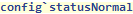
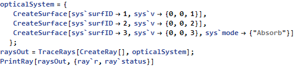
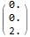
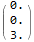

| CONFIG` SYMBOL |
config`statusNormal
| config`statusNormal A user modifiable configuration parameter of Polaris-M. This parameter sets the status value of a live ray. This can be changed but it is strongly recommended against. |

Data Type: Integer (±1)
Default Value: +1

 Basic Examples (2)
Basic Examples (2)
This is the living ray status. Rays will propagate with a status of 1 until they are absorbed, miss a surface or otherwise can not longer propagate


See the status

| r | status | |
| Surface0 | 1 | |
| Surface1 | 1 | |
| Surface2 |  | 1 |
| Surface3 |  | -8 |

 •
•  •
•  •
•  •
•  •
•  •
•  •
•  •
•  •
•  • •
• •  •
•  •
•  •
•  •
•  •
•  •
•  • •
• •